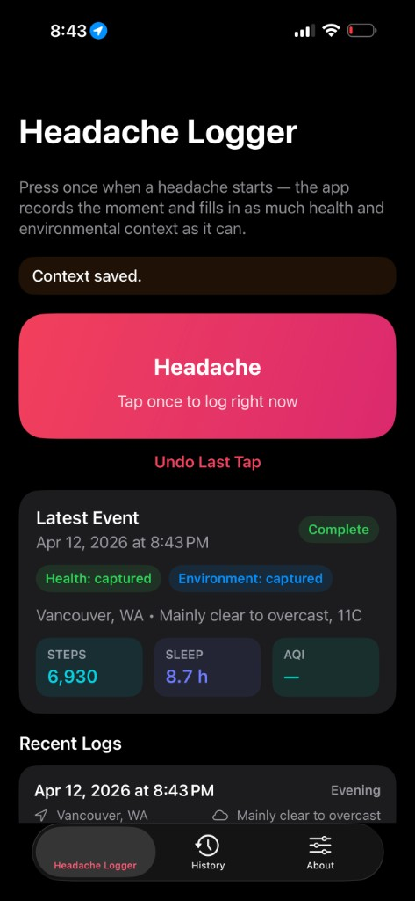
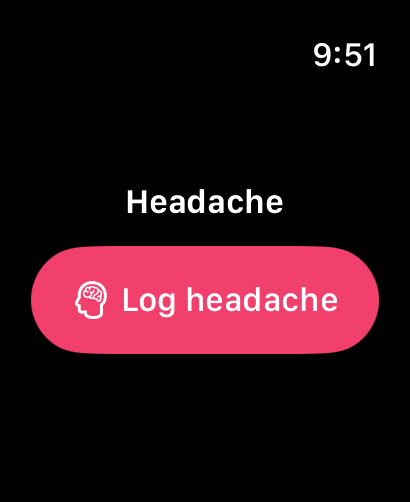

Headache Logger
One tap, fifty-plus signals, zero accounts. Built for people who don't want to fight a form mid-migraine.



§ The pitch
The active ingredient is what happens after the tap, not the tap itself. Every entry silently captures fifty-plus contextual signals — weather, barometric pressure trend, humidity, air quality, pollen counts, a dozen Apple Health metrics, time-of-day and day-of-week — and writes them into a sixty-column CSV your neurologist can open in Excel.
Most logging apps ask the patient to do the science. This one does the science automatically and asks the patient for one bit: are you in pain right now, yes or no.
§ Captured signals
| Apple Health | Steps, sleep, HRV, resting HR, SpO₂, VO₂max, workouts, audio exposure, mindful minutes, more |
|---|---|
| Weather | Temp, barometric pressure + 24h trend, humidity, wind, UV, precipitation, cloud cover |
| Air quality | US AQI, EU AQI, PM2.5, PM10, ozone, NO₂, SO₂, CO |
| Pollen | Alder, birch, grass, mugwort, olive, ragweed |
| Time | Weekday, hour, part of day, timezone |
§ Architecture
Five targets share a common SharedHeadache/ module:
- HeadacheLogger — the iPhone app.
- HeadacheLoggerWatch — Apple Watch companion. Entries log instantly and queue locally;
WatchConnectivityhands them to the phone when reachable. - HeadacheLoggerWidget — Home Screen widget plus an App Intent so a tap on a widget can actually log, no app launch required.
- HeadacheLoggerTests — the boring half.
- SharedHeadache — App Group helpers, shared persistence keys, model layer.
Persistence is SwiftData. Weather and AQI come from the free Open-Meteo API. Location is requested only at log time, used once for the lookup, and discarded — raw coordinates are never stored on the device.
§ Things I cared about
The watch tap really has to be one tap. Migraines do not pair well with autocomplete. The watch entry takes ~250ms from raise-to-wake to confirmation haptic.
Export is a first-class feature, not an afterthought. Most patient-facing apps treat clinical data export like a hostage negotiation. The CSV here has both metric and imperial units, ISO-8601 timestamps, and one row per event — it pastes straight into a research notebook.
It runs without the network. If you're offline at log time, the entry stores; weather backfills the next time the app sees a connection.
A medical-adjacent app that doesn't ask you to make an account is a small political statement.